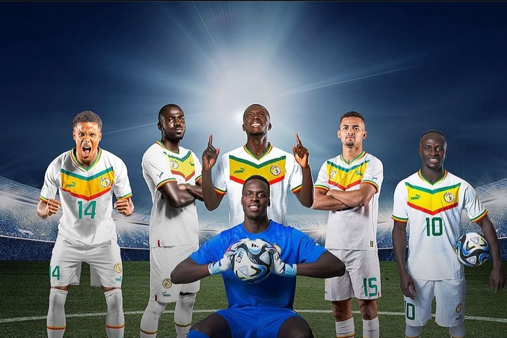

Le 13 janvier dernier, la Coupe d’Afrique des Nations débutait du côté de la Côte d’Ivoire. La compétition continentale était très attendue et surtout très observée cette année. Après une dernière édition moyenne au Cameroun marquée par de nombreuses polémiques liées au Covid notamment, la CAF et la Côte d’Ivoire voulaient mettre le paquet. Et après le premier tour de cette compétition, on peut dire que c’est une compétition très agréable qui se déroule aux quatre coins du pays avec une belle ferveur et des équipes qui jouent le jeu.
à propos |
Travail |
CV |
Contact |
|---|